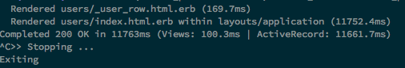
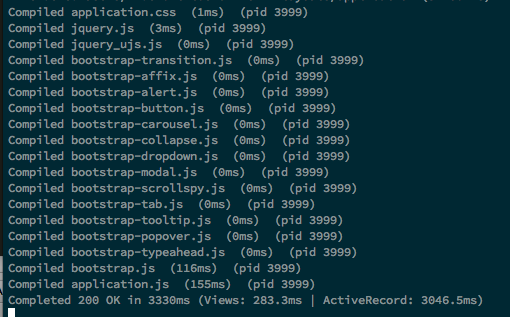
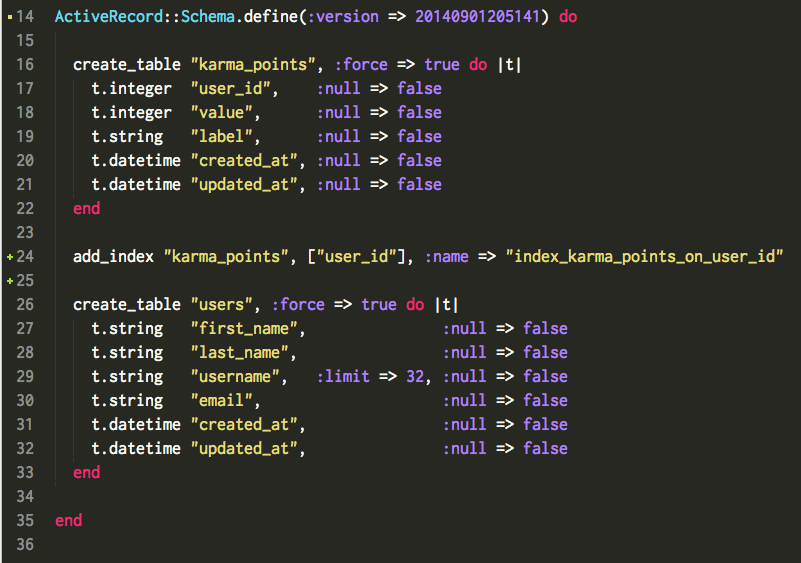

Performance Issues...
Today I worked on the challenge of trying to speed up a website that had a very large database. There are two main ways: either by indexing or de-normalizing a database. For this post, I'll just be talking about indexing.
Indexing
Indexing is a technique by which you take a column(usually a foreign_key belongs_to) and place a index on it. What the heck does that mean? In a normal RMDBS, looking up a Product for a User would mean going through the association between a User and a Product. I'd have to navigate from the User's id to the Product's id, then compare the user_id stored in each Product against my User's id. It would be much faster if I could just look at the user_id column in my Product and compare it against my User. That's what Indexes do. Below is a comparison between a database with no indexing and a database with indexing. Note the time differential(8 seconds!).
Without Indexing:
With Indexing:
The Index Migration:

The Index Schema:
